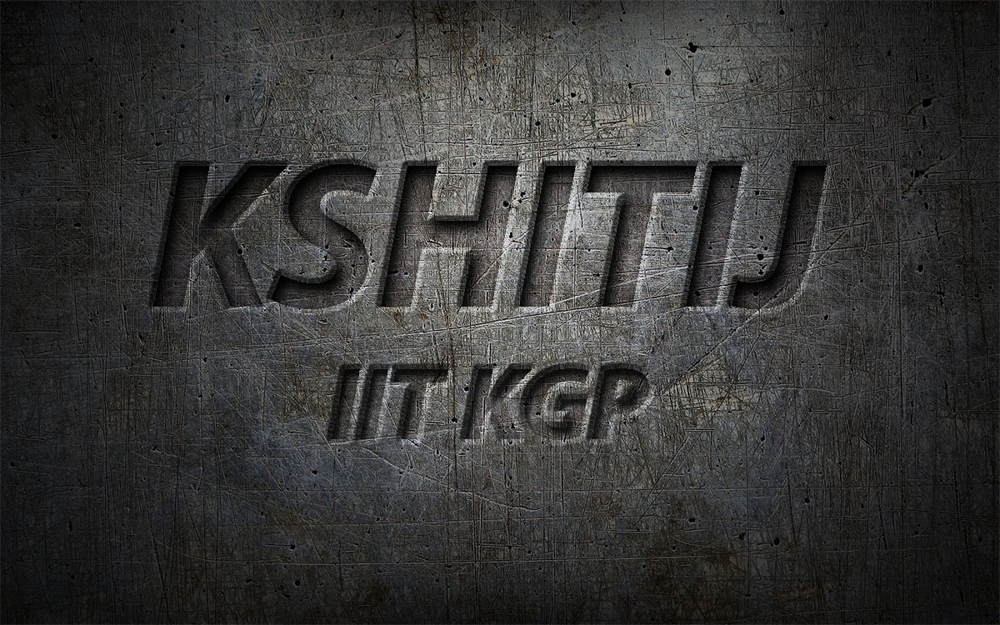

KSHITIJ
INTRODUCTION
Kshitij also called KTJ, is the annual techno-management festival of one of India’s premier technical institutions, the IIT Kharagpur. Kshitij’s journey started in 2004, from then its aim is to provide the technically inclined youth’s generation a national-level platform, where they can show their talents and expertise and would be recognized and rewarded. Since its early years, Kshitij developed exponentially, it gets an overpowering response from the students from various famous technical institutes and educational communities everywhere throughout the world. Not only from India but students from foreign countries are getting attracted toward Kshitij and are actively participating in its events creating a more competitive, challenging and developing environment. The official website of Kshitij(ktj.in), is the largest student-run website, getting almost 8 million impressions in its yearly release.
Recently Kshitij’s 16th release had been held from 19th to 21st January 2019. In this edition, Kshitij’s gets an all-over interest of more than 70,000 students from various technical institutes. And a total of Rs. 55 lacs offered as prize money. The Seventeenth release of Kshitij is scheduled from 18th to 20th January 2020. Registrations will start soon.
ABOUT THE FEST
The launch release of this techno-executives symposium was in the year 2004 when it got a name called ‘Ideon’. Even in its first release Kshitij got an attraction of more than 260 students from outside IIT Kharagpur. The cooperation has since developed and powered exponentially, and it has now turned into Asia’s biggest fest of its sort.
The fourteenth release of Kshitij was held from 27 to 29 January 2017. This period of Kshitij had visitors instructors from every one of the fields, from chief Mr. Rakeysh Omprakash Mehra, Brigadier Stephen Tetlow to ISRO space researcher Dr. K.Radhakrishnan. For the sake of entertainment, Kshitij 2017 had different casual occasions like the Bull ride, Water Zorbing, Drone recreation, and Bahubali VR. Kshitij 2017 experienced Infinity Mirror Clock from the USA, Robyn Inmoon from Sweden, 3D printed robots from the USA, Molecular VR structure the UK, U Gears Mechanical Models from Ukraine and indeo from India in its displays.
Workshops from tech goliaths like Toyota, Oracle, LIGO were directed for this present year. PRAKRITI and ASTITVA were 2 of the social activities taken for the current year by Kshitij. PRAKRITI was tied in with dealing with the expanding strong waste and ASTITVA was for helping understudies handle mental despondency which was presented by Indian on-screen character Tisca Chopra.
EVENTS
Capital Events
-
Laws of Motion: It is a flying aircraft designing and creation event felicitated by the Institution of Mechanical Engineers IMechE. It is a standout amongst the most celebrated eventsof Kshitij, which gets interests from students everywhere throughout the nation
-
Eureka: Paper presentation competition, certified by IEEE.
-
Overnite: The ACM ICPC multi-commonplace programming challenge is guaranteed by ACM, the world’s biggest and most renowned logical and instructive processing society
-
Embetronix: It is an inserted hardware circuit plan rivalry spread more than two rounds
-
Nightshift: An adjustment of the well known Discovery Channel appear, Junkyard Wars, this occasion is additionally ensured by IMechE
-
Clash of Brains: Game Theory based occasion, arranges by The KGPian Game Theory Society (IIT Kharagpur section of The Indian Game Theory Society)
-
Relic Hunter: An online treasure hunting game requiring analytical skills to solve tricky questions to get to the next clues in the ultimate quest for treasure. Based on Harry Potter
-
Code-O-Soccer: A simulation-based strategic coding event which provides you with a perfect platform to solve a strategy based creative problem using your coding and strategic
-
Sand Rover: Participants had an opportunity to build up an all-terrain bot and show their technical skills, where the wheels are bound to surf over uneven contours with minimum spillage of sand in sandrover. In this participant have to discharge their bots through challenging Obstacles pushing it to extreme limits while the clock ticks
Robotix Events
-
Robowars: Build a robot and inspire it in the field to battle and win from different robots
-
Zenith: It is post-war time and the place is all in shambles, with rubble and trenches all over the place. You are asked to design the prototype of a bot that is capable of clearing all these hurdles and reaching the zenith.
-
Crusade: To build an image processing robot that is capable of traversing in a lane while detecting glowing LEDs on its way and deciding its path according to the frequencies of the blinking LEDs
-
Cubiscan: The labyrinth to the National Treasure ain’t easy, and definitely beyond our scope because it’s entrapped in debris. Furthermore, the gate to the treasure is opened only by knowing the correct volume of blocks of specific physical characteristics, which perhaps shows skilled ancient architecture. We need to build up a bot on which this engulfing task can be assigned
-
Fortress: Build a picture handling robot that can perceive valuable examples by example acknowledgment while evading different hindrances
-
Poles apart: Build a physically controlled robot, which is fit for picking and putting obstructs with exactness and changing its interaxial separation to make a guide through a progression of obstacles
-
Stax: To assemble a bot which adjusts squares of various hues while moving over the stacks utilizing line following.